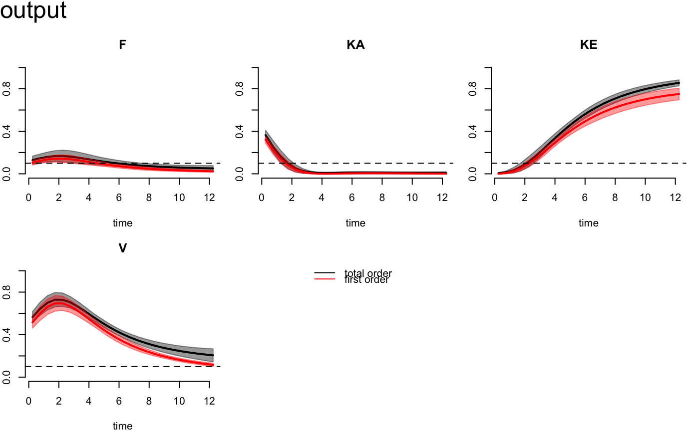
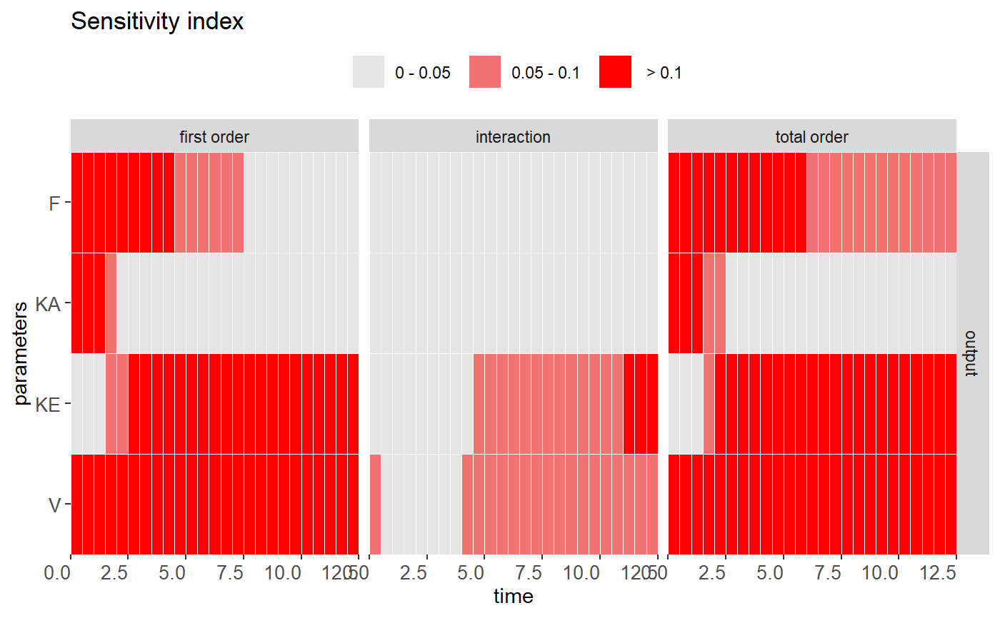
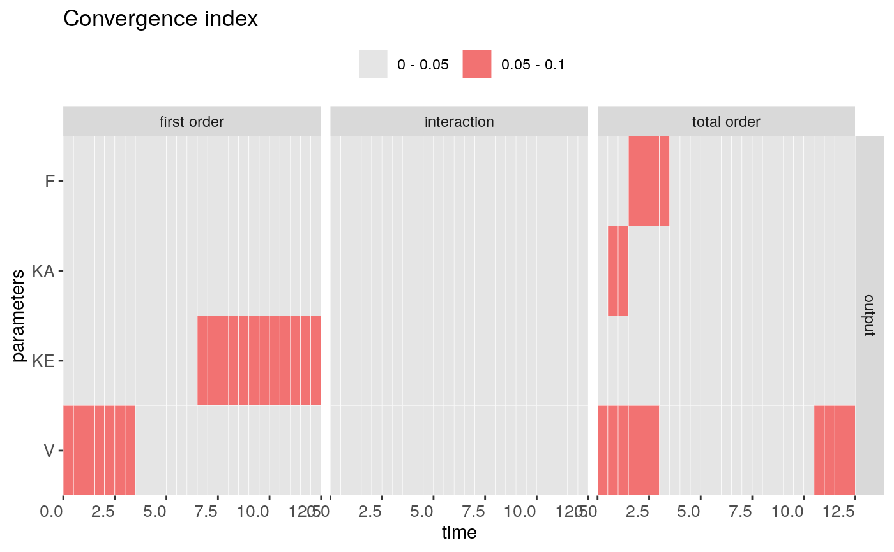

Visualize and check the sensitivity (or convergence) measurement with a given result.
check(x, times, vars, SI.cutoff, CI.cutoff) heat_check(x, order = c("first order", "interaction", "total order"), vars = NULL, times = NULL, SI.cutoff = c(0.05, 0.1), CI.cutoff = c(0.05, 0.1), index = "SI", level = T, text = F) # S3 method for rfast99 plot(x, vars = 1, SI.cutoff = 0.1, ...) # S3 method for rfast99 print(x, ...)
| x | a list of storing information in the defined sensitivity function. |
|---|---|
| times | a logical value or character to specific the display time in simulation. |
| vars | a logical value or character to specific the display variable in simulation. |
| SI.cutoff | a value or vector to set the cut-off for sensitivity index. The default is 0.05. |
| CI.cutoff | a value or vector to set the cut-off for convergence index. The default is 0.05. |
| order | a vector of interested output index included |
| index | a character to choose sensitivity index |
| level | a logical value to use continuous or discrete (default) output. |
| text | a logical value to display the calculated indices in the plot. |
| ... | additional arguments to customize the graphical parameters. |
The print function returns sensitivity and convergence indices
with given time-step in console. The check method provides the summary of
parameter sensitivity and convergence according to the given SI.cutoff and CI.cutoff.
It can distinguish the influential and non-influential parameter by the providing value
of SI.cutoff. The plot function can generate the
time-course functional outputs of first order and interaction indices for each parameter.
The default output is the first model variable. The heat_check provides a convenient way
to visualize and distinguish the influential and non-influential parameter by the setting cut-off.
The convergence index can examine the stability of sensitivity index.
To check convergence, be sure to conduct the replication in rfast99.
The convergence of sensitivity indices for each parameter is using the approach proposed by Sarrazin et al. (2016). This method quantitatively assesses the convergence by computing the range of 95 Using a global approach based on a heatmap visualization combined with an index "cut-off," can systematically distinguish between "influential" and "non-influential" parameters (Hsieh et al. 2018).
F Sarrazin, F Pianosi, T Wagener, 2016, Global sensitivity analysis of environmental models: convergence and validation, Environ. Model. Softw, 79, 135–152.
N-H Hsieh, B Reisfeld, FY Bois, WA, Chiu, 2018, Applying a global sensitivity analysis workflow to improve the computational efficiencies in physiologically-based pharmacokinetic modeling, Front. Pharmacol, 9, 588.
q <- "qunif" q.arg <- list(list(min = 0.6, max = 1), list(min = 0.5, max = 1.5), list(min = 0.02, max = 0.3), list(min = 20, max = 60)) params <- c("F","KA","KE","V") set.seed(1234) x <- rfast99(params = params, n = 200, q = q, q.arg = q.arg, rep = 20) time <- seq(from = 0.25, to = 12.25, by = 0.5) out <- solve_fun(x, model = FFPK, time = time, vars = "output")#>#># Check results of sensitivity measures check(out)#> #> Sensitivity check ( Index > 0.05 ) #> ---------------------------------- #> First order: #> F KA KE V #> #> Interaction: #> KE V #> #> Total order: #> F KA KE V #> #> Unselected factors in total order: #> #> #> #> Convergence check ( Index > 0.05 ) #> ---------------------------------- #> First order: #> KE V #> #> Interaction: #> #> #> Total order: #> F KA V #>plot(out)heat_check(out)heat_check(out, index = "CI")